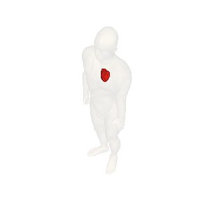

Step2: 視点を移動させる
サンプルコードの出力結果

視点を人体前（腹）中心から、焦点を中心に右45度、上45度移動して描画しています。焦点は人体の中心です。
サンプルコードの説明
詳しくは、Javadocをご覧ください。
18-22行目： 視点を指定します。基準点を指定し、そこからの経度、緯度方向のずれ（Offset）を、それぞれ角度(単位degree)で指定します。
| 属性 |
説明 |
デフォルト値 |
setter例 |
| 視点基準 |
ヒトを眺める方向（front,left,right,backのいずれか）を指定します。
"front"（人体前（腹）面中心、(経度、緯度)=(0,0)）、"right"（人体右側面、(経度、緯度)=(90,0)）、"back"（人体後（背）面、(経度、緯度)=(180,0)
、"left"（人体左側面、(経度、緯度)=(270/-90,0)）。 |
front |
setViewpoint("front") |
| 視点基準からのずれ（水平、経度）方向 |
右回り、東方向が正です。単位は度(degree)です。 |
0 |
setViewpointOffsetHorizontal(-45) |
| 視点基準からのずれ（垂直、緯度）方向 |
上、北方向が正です。単位は度(degree)です。 |
0 |
setViewpointOffsetVertical(45) |
| 画像の回転角 |
画像を右回りに回転します。単位は度(degree)です。 |
0 |
setViewRotate(90) |
サンプルコード
1 import jp.dbcls.ag.AgClient;
2 import jp.dbcls.ag.AgOrgan;
3 import jp.dbcls.ag.AgProp;
4
5 import java.util.ArrayList;
6
7 /**
8 * Step2 視点を正面右（水平、経度）方向、正面上（垂直、緯度）方向にそれぞれ45度移動する。
9 */
10 public class Step2 {
11 static AgProp prop = null;
12
13 static ArrayList organs = null;
14
15 public static void main(String[] args) throws Exception {
16 prop = new AgProp();
17 /** 基準位置(人体正面)を指定します **/
18 prop.setViewpoint("front");
19 /** 基準からのずれ（水平、経度方向）を指定します **/
20 prop.setViewOffsetHorizontal(45);
21 /** 基準からのずれ（垂直、緯度方向）を指定します **/
22 prop.setViewOffsetVertical(45);
23
24 organs = new ArrayList();
25 AgOrgan o;
26
27 o = new AgOrgan();
28 o.setName("skin");
29 o.setOpacity(0.2);
30 organs.add(o);
31
32 o = new AgOrgan();
33 o.setName("heart");
34 o.setRGBA(255, 0, 0, 1.0);
35 organs.add(o);
36
37 String imageurl = AgClient.getImage(prop, organs);
38
39 System.out.println("imageurl=" + imageurl);
40 String imagefile = "step2.png";
41
42 AgClient.saveFile(imageurl, imagefile);
43 }
44 }